同一套界面，要在 16:9 的电脑、4:3 的平板、21:9 的带鱼屏和竖着拿的手机上都好看，靠的是 Canvas 和 Canvas Scaler。这一章先讲 Canvas 的三种渲染模式和排序，再把 Canvas Scaler 的缩放公式拆开，用实拍的多分辨率对比图告诉你 Match 该填多少。
选中 Canvas，Inspector 里第一个属性就是 Render Mode（渲染模式）。它回答的问题是：这块画布在哪里、被谁画出来。三个选项对应三种完全不同的空间关系，见图 2-1。
用同一个界面、同一个 3D 正方体分别在三种模式下实拍，差别一目了然（图 2-2）：Overlay 下 UI 永远盖在一切之上；Camera 模式下画布被放在相机前 6 米处，比它近的正方体和地面挡住了 UI 的一部分；World Space 下画布变成了场景里一块倾斜的板子。
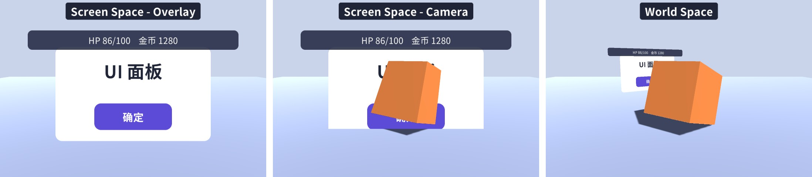
配套场景里底部有三个按钮，运行时可以在三种模式之间来回切换，正方体在不停旋转，能更直观地看到“UI 和 3D 谁挡谁”。切换代码如下：
默认模式，也是最简单的模式。画布不属于任何相机，Unity 在所有相机都渲染完之后，直接把它画在屏幕最上层。画布大小永远等于屏幕大小（除以缩放系数），RectTransform 由 Canvas 接管，不能手动修改。即使场景里一个相机都没有，Overlay 画布照样能显示。
它的特点是“与 3D 世界完全无关”：不受相机的远近裁剪、深度、后处理影响，3D 物体和粒子永远不可能出现在它上面。绝大多数 HUD、菜单、弹窗用它就够了。多个 Overlay 画布之间用 Sort Order 决定先后，数值大的后画、在上面。
画布被放在指定相机（Render Camera）前方 Plane Distance 处的一个平面上，大小自动调整到正好铺满这个相机的视野。看起来和 Overlay 差不多，但它是由相机渲染的，于是：
Plane Distance 要落在相机的近裁剪面和远裁剪面之间，否则整个画布被裁掉看不见。Render Camera 没有赋值时，画布会按 Overlay 的方式渲染，Inspector 里会出现提示。
画布变成场景中的一个普通物体：位置、旋转、缩放都由它自己的 RectTransform 决定，可以被任意相机从任意角度看到，和 3D 物体一样有远近、有遮挡。头顶名字和血条、游戏里的电脑屏幕、VR 里的菜单都用它。
World Space 画布最容易出错的是尺寸。RectTransform 的 Width/Height 是“UI 单位”，而这块画布在世界里的实际大小 = 宽高 × Scale。一般的做法是保持 UI 单位和平时差不多（比如宽 400），再把 Scale 设成 0.005 这样的小数，于是画布宽 400 × 0.005 = 2 米。如果直接从 Overlay 切过来，画布还保持着屏幕像素尺寸（1920×1080），Scale 为 1，那就是一块近两公里宽的板子。另外，World Space 画布的 Canvas 组件上会出现 Event Camera 字段，用来做点击检测，需要把能看到它的相机拖进去，否则点不到。
| 模式 | 适合 | 注意 |
|---|---|---|
| Overlay | 大部分 HUD、菜单、弹窗、提示 | 3D 物体和粒子永远在它下面；不受后处理影响 |
| Camera | 需要粒子特效在 UI 上播放、3D 模型夹在 UI 中间、UI 也要后处理 | 需要指定相机；Plane Distance 在裁剪范围内；注意 3D 物体意外挡住 UI |
| World Space | 头顶名字/血条、场景内屏幕、VR/AR 界面 | 自己设定尺寸和缩放；要指定 Event Camera 才能点击 |
怎么选？可以按这个顺序问自己：这块 UI 是不是“长在 3D 世界里”的（名字牌、场景里的屏幕、VR 菜单）？是就用 World Space。不是的话，它需不需要和 3D 物体或粒子互相穿插、需不需要相机的后处理？需要就用 Camera。都不需要，就用 Overlay。一个项目里三种模式同时存在是很正常的：主界面和弹窗用 Overlay，带特效的抽卡界面用 Camera，角色头顶用 World Space。唯一要避免的是“为了一个粒子特效把整个项目的 UI 都改成 Camera 模式”，那会把本来很简单的排序问题变复杂。
Screen Space - Camera 模式下，Canvas 组件多出几个属性：
canvas.sortingOrder。Overlay 模式下这个字段显示为 Sort Order，含义相同。
半透明对象（UI、粒子、SpriteRenderer）的绘制顺序可以简化成：先比 Sorting Layer，再比 Order in Layer，都相同再按到相机的距离从远到近。不透明的 3D 物体则先画，并写入深度。所以“3D 物体挡不挡 UI”看的是深度（谁离相机近），“粒子在不在 UI 上面”看的是排序（Order 谁大）——这两件事别混在一起。
项目里常见的做法是用两台相机：主相机渲染 3D 场景，Culling Mask 去掉 UI 层；另建一台 UI 相机，Culling Mask 只勾 UI 层，Clear Flags 设为 Depth only（只清深度、保留下面主相机画好的画面），Depth 比主相机大（后渲染），所有 Camera 模式的画布都指定这台 UI 相机。这样 UI 和 3D 场景互不干扰，主相机可以随意移动、加后处理，UI 都不受影响；UI 相机一般用正交投影。
Overlay 和 Camera 模式下 Canvas 有一个 Pixel Perfect 勾选框。打开后，UI 元素的顶点会被对齐到最近的屏幕像素上，避免图片边缘落在半个像素上而发虚，像素风游戏和细线条图标会更锐利。代价有两个：一是元素移动时会一格一格地“跳”而不是平滑移动，做滚动列表和动画时很明显；二是需要额外计算，大量元素运动时有开销。它对 World Space 画布无效（源码 Graphic.PixelAdjustPoint 里遇到 World Space 直接返回原值）。一般项目保持关闭，像素风项目才考虑打开；嵌套画布可以通过 Override Pixel Perfect 单独设置。
屏幕分辨率千差万别：1280×720 的老手机、2560×1440 的显示器、2778×1284 的新手机。如果 UI 单位和屏幕像素一一对应，那么在 720p 屏幕上正好的按钮，到 1440p 上就只有一半大。Canvas Scaler（画布缩放器）就是解决这个问题的：它计算一个缩放系数 scaleFactor，整个画布按这个系数缩放，于是 画布的逻辑尺寸 = 屏幕像素尺寸 ÷ scaleFactor。我们摆 UI 用的都是逻辑尺寸。
编辑器新建 Canvas 的默认值。scaleFactor 就是你填的 Scale Factor（默认 1），不随屏幕变化：1 个 UI 单位永远是 Scale Factor 个像素。屏幕越大，UI 看起来越小、能放下的东西越多。适合 PC 上“窗口变大就多显示内容”的工具类界面，或者你打算在代码里根据屏幕自己算缩放。做游戏界面几乎不用它。
游戏最常用的模式。你给定一个参考分辨率（Reference Resolution），比如 1920×1080，按这个分辨率设计界面；运行时 Canvas Scaler 比较真实屏幕和参考分辨率，算出缩放系数。屏幕刚好是 1920×1080 时 scaleFactor = 1；屏幕是 3840×2160 时 scaleFactor = 2，一切都放大一倍，看起来和设计稿一模一样。难点在于宽高比不同的屏幕：宽度比例和高度比例不一样，听谁的？这由 Screen Match Mode 决定，2.4 节专门讲。
让 UI 元素在任何屏幕上都保持相同的物理尺寸（比如按钮永远是 1 厘米宽），依据是屏幕的 DPI（每英寸像素数）。源码（摘自 com.unity.ugui 1.0.0 Runtime/UI/Core/Layout/CanvasScaler.cs）：
float currentDpi = Screen.dpi;
float dpi = (currentDpi == 0 ? m_FallbackScreenDPI : currentDpi);
float targetDPI = 1;
switch (m_PhysicalUnit)
{
case Unit.Centimeters: targetDPI = 2.54f; break;
case Unit.Millimeters: targetDPI = 25.4f; break;
case Unit.Inches: targetDPI = 1; break;
case Unit.Points: targetDPI = 72; break;
case Unit.Picas: targetDPI = 6; break;
}
SetScaleFactor(dpi / targetDPI);
SetReferencePixelsPerUnit(m_ReferencePixelsPerUnit * targetDPI / m_DefaultSpriteDPI);
以默认的 Points（点，1 英寸 = 72 点）为例：在 DPI 为 144 的屏幕上 scaleFactor = 144 / 72 = 2，1 个 UI 单位 = 2 个像素 = 1/72 英寸。Screen.dpi 拿不到时（返回 0）用 Fallback Screen DPI（默认 96）。听上去很理想，但实际中各设备上报的 DPI 并不总是准确，手机和电视的观看距离也完全不同，“物理尺寸相同”未必是想要的效果，所以游戏里很少用。
这个值经常被忽略，但它决定了图片的“原始大小”。Image 计算自己的 pixelsPerUnit 时用的是这个公式（摘自 Runtime/UI/Core/Image.cs）：
float spritePixelsPerUnit = 100;
if (activeSprite)
spritePixelsPerUnit = activeSprite.pixelsPerUnit;
if (canvas)
m_CachedReferencePixelsPerUnit = canvas.referencePixelsPerUnit;
return spritePixelsPerUnit / m_CachedReferencePixelsPerUnit;
精灵导入设置里的 Pixels Per Unit 默认是 100，画布的 Reference Pixels Per Unit 默认也是 100，二者相除等于 1：精灵的 1 个纹理像素 = 1 个 UI 单位。点 Image 的 Set Native Size 时，一张 200×100 的图就会变成 200×100 的 UI 尺寸；九宫格（Sliced）图片的边框宽度也按这个比例换算。如果美术把精灵的 Pixels Per Unit 改成了 200，Set Native Size 后图片只有一半大，九宫格边框也会变细——这时要么统一精灵的 PPU，要么调 Image 的 Pixels Per Unit Multiplier（第 4 章）。建议整个项目的 UI 精灵统一使用 100，画布也保持 100，省掉一大类莫名其妙的尺寸问题。
Scale With Screen Size 模式下，Screen Match Mode 有三个选项：Match Width Or Height（按 Match 滑块在宽、高之间插值）、Expand（扩展）、Shrink（收缩）。先看最常用的第一个。设屏幕宽高为 W、H，参考分辨率为 Wr、Hr，Match 滑块的值为 m（0 到 1）。源码是这样算的（摘自 CanvasScaler.cs，kLogBase 是常量 2）：
// We take the log of the relative width and height before taking the average. // Then we transform it back in the original space. // the reason to transform in and out of logarithmic space is to have better behavior. // If one axis has twice resolution and the other has half, it should even out if widthOrHeight value is at 0.5. // In normal space the average would be (0.5 + 2) / 2 = 1.25 // In logarithmic space the average is (-1 + 1) / 2 = 0 float logWidth = Mathf.Log(screenSize.x / m_ReferenceResolution.x, kLogBase); float logHeight = Mathf.Log(screenSize.y / m_ReferenceResolution.y, kLogBase); float logWeightedAverage = Mathf.Lerp(logWidth, logHeight, m_MatchWidthOrHeight); scaleFactor = Mathf.Pow(kLogBase, logWeightedAverage);
写成公式：
也就是说，scaleFactor 是“宽度比例”和“高度比例”的加权几何平均，而不是算术平均。m = 0 时只看宽度：scaleFactor = W / Wr，画布的逻辑宽度永远等于参考宽度 1920，高度随屏幕比例变化；m = 1 时只看高度：画布逻辑高度永远是 1080，宽度随屏幕变化；m = 0.5 时两边各让一步。
源码注释里举了一个例子：如果屏幕宽度是参考的 2 倍、高度是参考的一半，Match 取 0.5 时，直觉上“两边扯平”，缩放应该是 1。算术平均却是 (2 + 0.5) / 2 = 1.25，偏向了放大；几何平均是 √(2 × 0.5) = 1，正好扯平。原因是缩放是“乘法”性质的量：放大 2 倍和缩小到 1/2 是对称的两个操作，在对数空间里它们是 +1 和 −1，平均起来才是 0。图 2-5 把两种插值画在一起对比。
实际屏幕的宽高比例差别没这么极端，两种插值的差别通常只有百分之一二，但对数插值保证了一个很好的性质：屏幕宽高比例与参考分辨率相同时，任何 Match 值算出来的结果都一样（宽、高比例相等，加权几何平均就是它本身）。Match 只在“宽高比与设计稿不同”时起作用。
以参考分辨率 1920×1080（16:9）、一块 720×540（4:3）的屏幕为例。宽度比例 720/1920 = 0.375，高度比例 540/1080 = 0.5：
| Match | scaleFactor | 画布逻辑尺寸（屏幕 ÷ scaleFactor） | 效果 |
|---|---|---|---|
| 0（按宽） | 0.375 | 1920 × 1440 | 宽度刚好装下设计稿，上下多出 360 个单位的空间 |
| 0.5 | √(0.375×0.5) ≈ 0.433 | 1663 × 1247 | 宽度少了一些、高度多了一些 |
| 1（按高） | 0.5 | 1440 × 1080 | 高度刚好，宽度比设计稿窄了 480 个单位 |
这三行数字不是算出来贴上的——图 2-7 每一格中间的信息面板，就是 ScreenInfo 组件在截图时实时读出的 canvas.scaleFactor 和画布 rect，和表格完全一致。可以看出一个规律：Match 越偏向某一边，那一边的逻辑尺寸就越接近参考值，另一边则承担全部的比例差。
目标：用一个典型的横屏游戏 HUD（左上头像血条、顶部关卡、右上金币和设置、左下摇杆、右下技能按钮），在 16:9、4:3、21:9 和竖屏四种比例下实拍，再比较不同 Match 的效果，最后给出 Match 的选择建议。
HUD 的每个元素都用锚点钉在屏幕的某个角或某条边上（第 3 章细讲），中间放一个信息面板，实时显示适配相关的数字：
canvas.renderingDisplaySize 是画布实际渲染到的像素尺寸（Canvas Scaler 计算时用的就是它，对主显示器而言等于屏幕分辨率）；画布 RectTransform 的 rect.size 就是逻辑尺寸。脚本加了 [ExecuteAlways]，不运行也会刷新，在编辑器里切换 Game 视图分辨率就能看到数字变化。
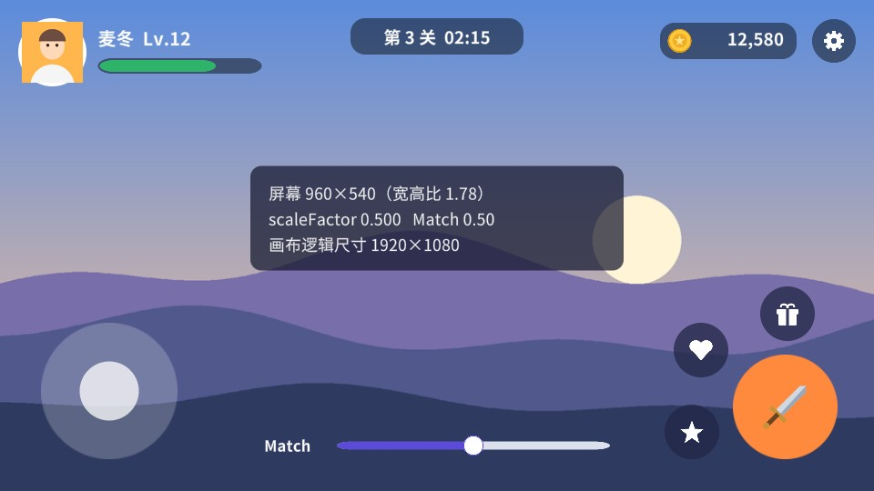
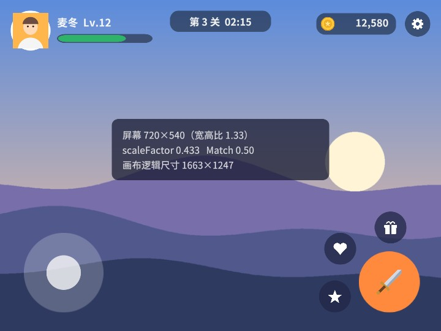
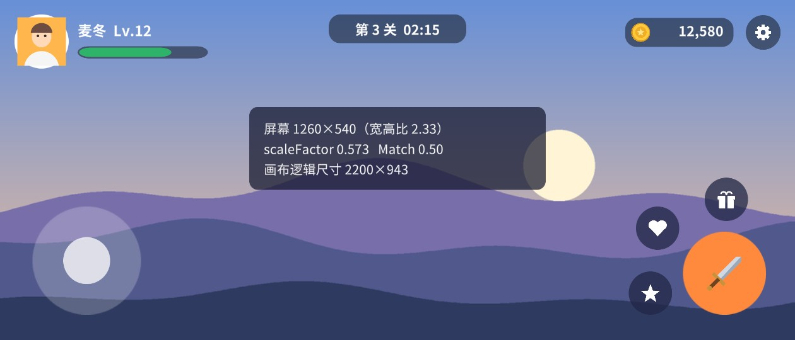
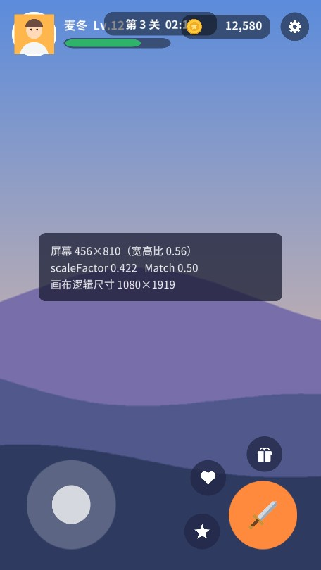
先说明一下截图里的“屏幕”尺寸：配图是按 960×540、720×540 这样的像素渲染出来的，所以 scaleFactor 都小于 1。这恰好说明了一点：画布的逻辑尺寸只取决于屏幕的宽高比和 Match，与像素多少无关。同样是 16:9，720p、1080p、4K 屏幕上画布的逻辑尺寸都是 1920×1080，只是 scaleFactor 分别为 0.667、1、2。你在 1080p 下摆好的界面，在 4K 屏幕上只是被等比放大，不会变形。
对照四张图：
把 Match 分别设为 0、0.5、1，在 4:3 和 21:9 上各拍一组。橙色粗框是参考分辨率 1920×1080 那块区域在当前画布中的位置——框内是“设计稿保证有的区域”，框外是多出来的或被裁掉的部分。
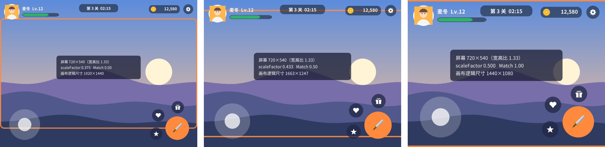
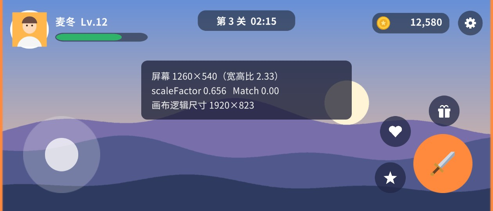
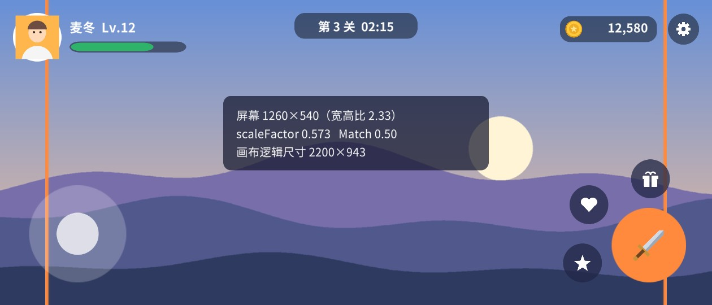
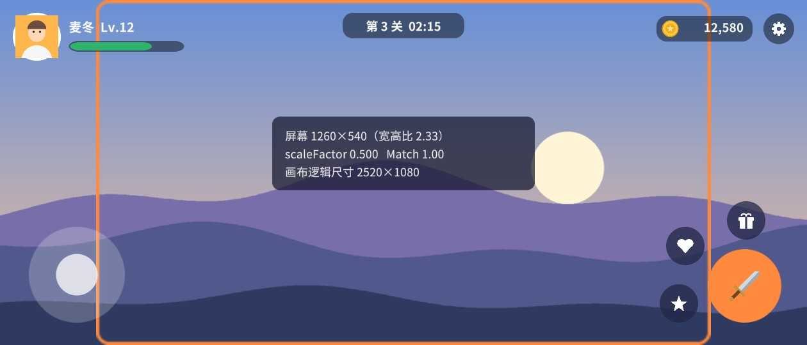
两组图放在一起看，规律很清楚：
所以没有一个 Match 值能在两种情况下都保证完整。常见的选择有三种：
参考分辨率最好就是设计稿的尺寸，美术按这个尺寸出图、你按这个尺寸摆界面，数字可以一一对应。横屏游戏常用 1920×1080，竖屏常用 1080×1920；以前很流行的 1280×720 也可以，但现在主流手机都是 1080p 以上，用 720p 做参考时 scaleFactor 普遍大于 1.5，切图如果也是按 720p 出的，放大后会发糊。反过来，参考分辨率选得太大（比如 2560×1440），切图体积和内存都会上去，而低端机上 scaleFactor 小于 0.5，图片被大幅缩小，既浪费又可能出现锯齿。一个经验是：切图按参考分辨率的 1 倍出，参考分辨率接近目标设备的主流分辨率。
宽高比方面，参考分辨率的比例最好落在目标设备比例范围的中间。比如目标设备从 4:3 的平板到 20:9 的手机都有，用 16:9 做参考，两头的偏差都不算太大；如果只做手机，用 19.5:9（如 2340×1080）做参考，大部分设备都接近设计稿，只需要单独照顾一下平板。
另外两种 Screen Match Mode 不需要你选 Match 值：
case ScreenMatchMode.Expand:
scaleFactor = Mathf.Min(screenSize.x / m_ReferenceResolution.x, screenSize.y / m_ReferenceResolution.y);
break;
case ScreenMatchMode.Shrink:
scaleFactor = Mathf.Max(screenSize.x / m_ReferenceResolution.x, screenSize.y / m_ReferenceResolution.y);
break;
Expand（扩展）取宽、高比例中较小的那个。缩放系数小，画布逻辑尺寸就大，结果是画布在一个方向等于参考值、另一个方向大于参考值——参考区域总是完整可见，多出来的部分是额外空间。仔细想一下，它其实就是“屏幕比设计稿宽时用 Match = 1，比设计稿窄时用 Match = 0”的自动版本，也就是上面两组对比图里“参考区域完整”的那一种。
Shrink（收缩）取较大的那个：画布在一个方向等于参考值、另一个方向小于参考值——画布总是被参考区域铺满，但参考区域的一部分会超出屏幕被裁掉。适合全屏背景、过场插图这种“宁可裁一点也不能留黑边”的场合。
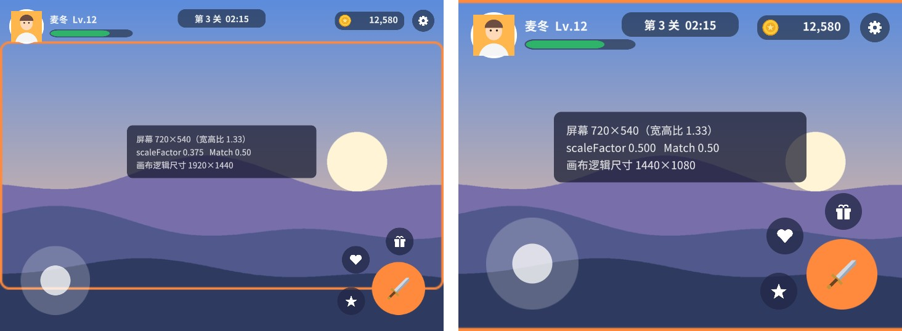
配套场景 Ch02_Adaptive 底部有一个 Match 滑块，运行后拖动它，同时切换 Game 视图的分辨率，观察中间面板的数字和四周元素的位置变化：
一个场景里可以有多个根画布，比如 HUD 一个、弹窗一个、新手引导一个。它们之间谁在上面，按 2.2 节的规则：Overlay 画布之间比 Sort Order；Camera 和 World Space 画布与其他半透明物体一起，比 Sorting Layer、Order in Layer 和距离。所有 Overlay 画布都画在 Camera 画布之上，因为它们是在相机渲染完之后才画的。
Canvas 也可以嵌套：在某个 UI 元素上再加一个 Canvas 组件，它就成了子画布（Nested Canvas）。默认情况下，子画布在视觉上和普通子节点没区别：按层级顺序绘制、继承父画布的渲染模式和排序。那为什么要嵌套？主要有两个理由：
GraphicRegistry），父画布的 Graphic Raycaster 只检测登记在父画布名下的图形。用代码或菜单加 Canvas 组件时不会自动加 Raycaster，这是嵌套画布后“按钮突然点不动”的常见原因。绘制顺序和点击顺序是一致的，这不是巧合，而是 EventSystem 刻意做到的。EventSystem.RaycastAll 收集完所有 Raycaster 的结果后，用一个比较函数排序（摘自 Runtime/EventSystem/EventSystem.cs，有删节）：
if (lhs.module != rhs.module)
{
// 不同 Raycaster：先比事件相机的 depth，再比 sortOrderPriority、renderOrderPriority
}
if (lhs.sortingLayer != rhs.sortingLayer) { /* 比排序层的先后 */ }
if (lhs.sortingOrder != rhs.sortingOrder)
return rhs.sortingOrder.CompareTo(lhs.sortingOrder);
// 同一个根画布内才比较 depth（绘制深度）
if (lhs.depth != rhs.depth && lhs.module.rootRaycaster == rhs.module.rootRaycaster)
return rhs.depth.CompareTo(lhs.depth);
对 Overlay 画布，GraphicRaycaster 的 sortOrderPriority 就是画布的 Sort Order；画布内部则按 depth——Canvas 在合批时给每个图形算出的绘制深度——排序。所以“Sort Order 大的画布在上面”“同一画布内后画的在上面”这两条规则，对绘制和点击同时成立。第 11 章会完整读一遍这段代码。
Canvas 组件最下面有一个 Additional Shader Channels 多选框，选项有 TexCoord1、TexCoord2、TexCoord3、Normal、Tangent。UI 网格默认只把顶点位置、颜色和第一套 UV 传给 Shader；如果某个 UI Shader 需要更多的顶点数据（第二套 UV、法线、切线），必须在这里勾上，否则 Shader 读到的是空数据。
最常见的使用者是 TextMeshPro：它把 SDF 渲染需要的额外参数（如字号相关的缩放、粗体信息）塞在 UV1、法线和切线里。TMP 在生成文字网格时会自动帮你打开这几个通道（摘自 com.unity.textmeshpro 3.0.7 TMPro_UGUI_Private.cs）：
// Must ensure the Canvas support the additional vertex attributes used by TMP.
if (m_canvas.additionalShaderChannels != (AdditionalCanvasShaderChannels)25)
m_canvas.additionalShaderChannels |= (AdditionalCanvasShaderChannels)25;
25 = 1（TexCoord1）+ 8（Normal）+ 16（Tangent）。所以你会发现，放了 TMP 文字的画布这一项会自动变成 “TexCoord1, Normal, Tangent”。打开通道会让这块画布上所有元素的顶点数据都变大一些，所以不需要时不要乱勾。第 13、14 章写自定义网格效果和 Shader 时还会用到它。
目标：三个角色头顶各有一块名字牌（等级 + 名字 + 血条），无论相机怎么转，名字牌都正对屏幕。
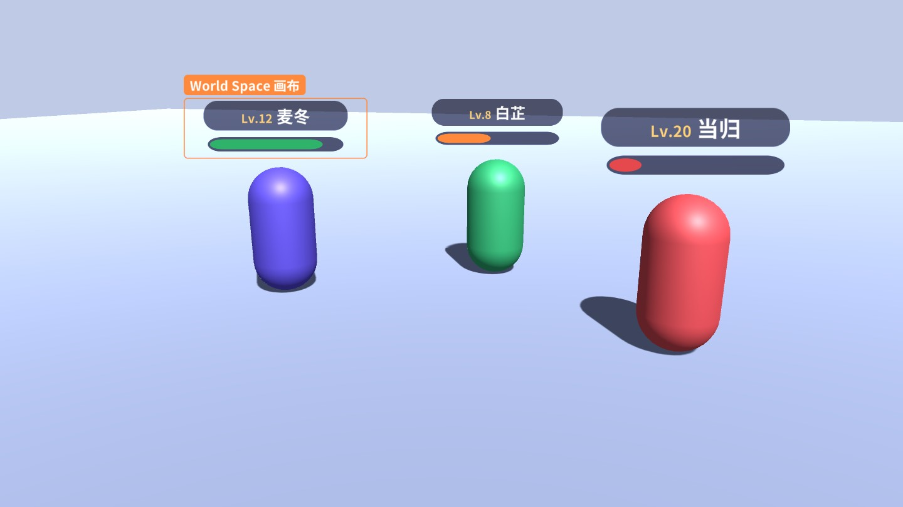
思路：每个角色下挂一个 World Space 画布作为名字牌，画布的位置放在角色头顶。剩下的问题是朝向：画布是一块平板，相机转到侧面时就只能看到一条线了，需要一个“看板（Billboard）”脚本让它每帧转向相机。
Billboard 脚本。这里有两个值得讲的细节。
“与相机朝向一致”而不是“看向相机”。直觉的写法是 transform.LookAt(cam.transform)，让每块名字牌都指向相机的位置。但透视相机下，画面边缘的名字牌指向相机时会有一个角度，和屏幕平面不平行，看起来是歪的，而且每块歪的角度都不同。让所有名字牌的朝向都等于相机的 forward，它们就都和屏幕平面平行，整齐划一。另外注意 UGUI 的“正面”：画布的 forward（Z 轴正方向）要和相机的 forward 同向，文字才是正的；如果用 LookAt 指向相机，Z 轴是朝向相机的，文字会左右镜像。
lockY 选项：俯视角游戏里相机往下看，名字牌也会跟着“躺下”，文字被压扁。只绕 Y 轴旋转（把 forward 的 y 分量清零）可以让名字牌始终竖直，代价是相机俯角很大时名字牌看起来会变矮。两种效果都在场景里试一下。
Camera.WorldToScreenPoint 把角色头顶的位置换算到屏幕上（第 17 章的头顶血条就是这样做的，还处理了屏幕外和背后的情况）。配套场景的相机挂着上面这个简单的环绕脚本：按住左键拖动旋转、滚轮缩放，方便从各个角度观察名字牌。其中 EventSystem.current.IsPointerOverGameObject() 用来判断鼠标是否在 UI 上，避免拖动 UI 时相机也跟着转，第 11 章会详细讲它。
目标：做一个“宝石详情”界面：背景、属性面板在后面，一颗旋转的 3D 宝石和闪光粒子在中间，顶栏、折扣横幅和购买按钮在最前面，横幅要盖住宝石的一角。
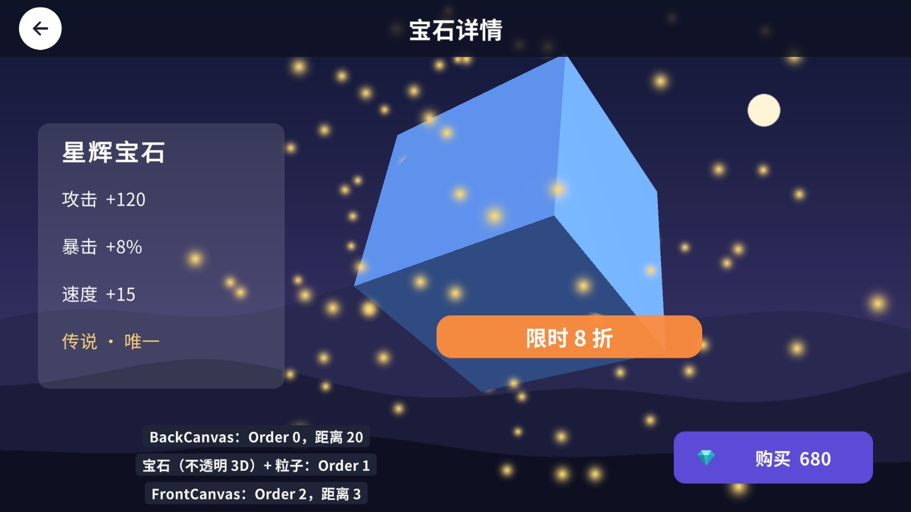
思路：Overlay 做不到，因为 Overlay 永远在一切之上。改用两块 Screen Space - Camera 画布，指定同一台相机：
Spin 脚本让它旋转。场景里需要一盏方向光照亮它。这里同时用到了两套机制，必须分清楚：
目标：HUD 画布上的“背包”按钮旁边有一个“新获得 3 件装备”的气泡。另一个画布上弹出了系统公告。默认情况下气泡被弹窗盖住；让气泡显示在弹窗之上，而且它仍然是按钮的子物体（按钮移动时气泡跟着走）。
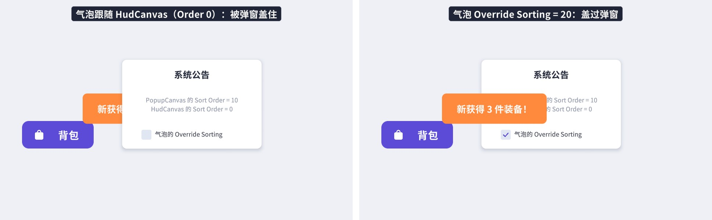
场景里有两个根画布：HudCanvas（Sort Order 0）和 PopupCanvas（Sort Order 10）。气泡 Tip 是 HUD 上背包按钮的子物体，它身上加了一个 Canvas 组件（以及 Graphic Raycaster）。不开 Override Sorting 时，Tip 属于 HudCanvas 的一部分，整个 HUD 都画在 PopupCanvas 之前，所以气泡被盖住。勾上 Override Sorting、把 Order 设为 20，它就跳出了 HUD 的排序，作为一个独立单元参与比较：20 > 10，画在公告之上。
运行场景，勾选/取消公告里的开关，观察气泡的变化。点击也一样遵循这个顺序：气泡在上面时，点气泡和公告重叠的区域，收到事件的是气泡。
Override Sorting 在实际项目里很常用：新手引导的高亮框、拖拽中的物品图标、跟随某个控件但要显示在全局最上层的提示，都可以用这种方式“跳层”，而不必把它们从原来的层级中搬出去。但每多一个开启 Override Sorting 的子画布，就多一个独立的绘制单元，会打断合批，不要滥用。
在规模较大的项目里，建议一开始就规划好画布的排序区间，比如背景层 0～99、普通界面 100～999、弹窗 1000～1999、提示 2000～2999、新手引导 3000 以上，每打开一个界面就在所属区间里分配一个递增的 Order。这样无论界面以什么顺序打开，层级关系都可控，第 16 章的 UI 框架就是按这个思路管理层级的。
最后把几个零散但经常被问到的细节集中说一下。
源码 CanvasScaler.Handle() 第一句就是：
if (m_Canvas == null || !m_Canvas.isRootCanvas)
return;
嵌套画布上的 Canvas Scaler 什么也不做，子画布直接沿用根画布的缩放。用菜单在某个 UI 元素下创建 Canvas 时，Unity 也会自动加上 Canvas Scaler，看着有一堆参数，其实没用，可以删掉以免误导。另外，Canvas Scaler 不是在 Update 里计算的，而是订阅了 Canvas.preWillRenderCanvases，在每次画布渲染前重新计算；它还带 [ExecuteAlways]，所以编辑器不运行时改 Game 视图分辨率也会立即生效。
写代码时经常需要在“屏幕像素”和“UI 单位”之间换算，比如把触摸移动的距离（像素）换算成 UI 元素应该移动的距离。关系很简单：屏幕像素 = UI 单位 × scaleFactor（Overlay 和 Camera 模式）。所以拖拽时常见的写法是 rt.anchoredPosition += eventData.delta / canvas.scaleFactor。忘了除以 scaleFactor，元素在高分屏上就会比手指移动得快。更稳妥的做法是用 RectTransformUtility.ScreenPointToLocalPointInRectangle 直接把屏幕点换算到本地坐标，第 3 章案例 3.6 会讲。
Game 视图顶部有一个 Scale 滑块，在固定分辨率比 Game 窗口还大时，它会自动缩小显示。这个滑块只是“放大镜”，不改变渲染分辨率，也不影响 Canvas Scaler 的计算。判断界面在某个分辨率下的效果，看的是分辨率下拉框，而不是 Scale。同样，Game 视图标题栏的 “Low Resolution Aspect Ratios” 选项只在 Retina 屏的 Mac 上出现，勾上后会以一半的分辨率渲染，此时 UI 的 scaleFactor 也会变成一半，别被它吓到。
PC 游戏可以在设置里改分辨率、在窗口和全屏之间切换；手机可以旋转屏幕；折叠屏可以展开。Canvas Scaler 每次渲染前都会重新计算，锚点会自动跟着画布重新定位，所以只要你的布局全靠锚点，这些变化都不需要写代码处理。需要写代码的情况是：你缓存了某个元素的位置或尺寸（比如在 Start 里记下了 rect.width），分辨率变化后它就过时了。可以在组件里实现 OnRectTransformDimensionsChange()，它会在 RectTransform 尺寸变化时被调用，在那里重新计算。
Overlay 画布有一个 Target Display 属性，指定画到第几块显示器上；Camera 和 World Space 画布则跟随相机的 Target Display。Canvas Scaler 在计算非主显示器上的画布时，会改用 Display.displays[i] 的渲染尺寸。一般的游戏用不到，做多屏展示、控制台加主屏的项目才需要关心。
Billboard 让名字牌在屏幕上的大小保持不变（提示：根据到相机的距离调整 localScale）。